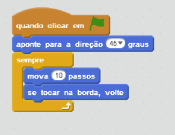
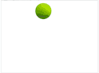
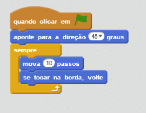
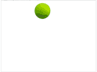
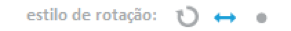
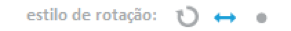

Saltitar
Para fazer um ator saltar ao redor do palco, tente este script:

O ator aponta para um ângulo, e depois continua se movendo e pulando para fora da borda.


O ator aponta para um ângulo, e depois continua se movendo e pulando para fora da borda.

Se o seu ator estiver de cabeça para baixo, clique em  e defina seu estilo de rotação como esquerda-direita:
e defina seu estilo de rotação como esquerda-direita:

e defina seu estilo de rotação como esquerda-direita: